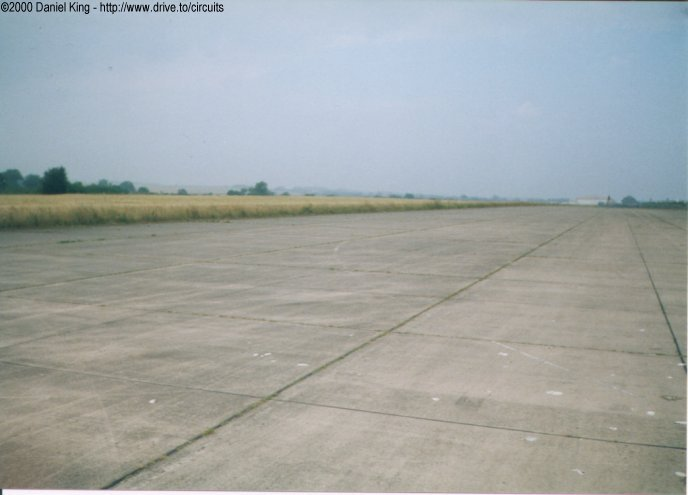
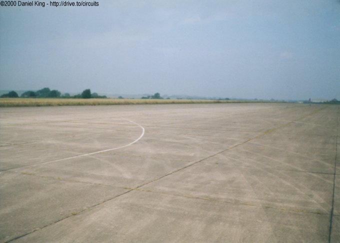
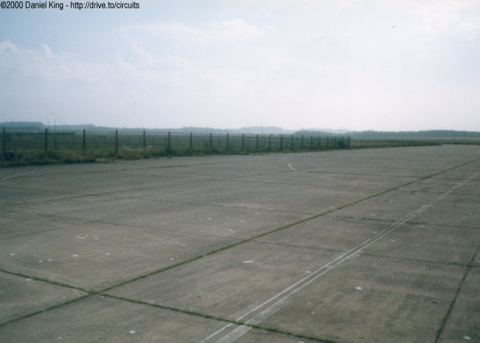
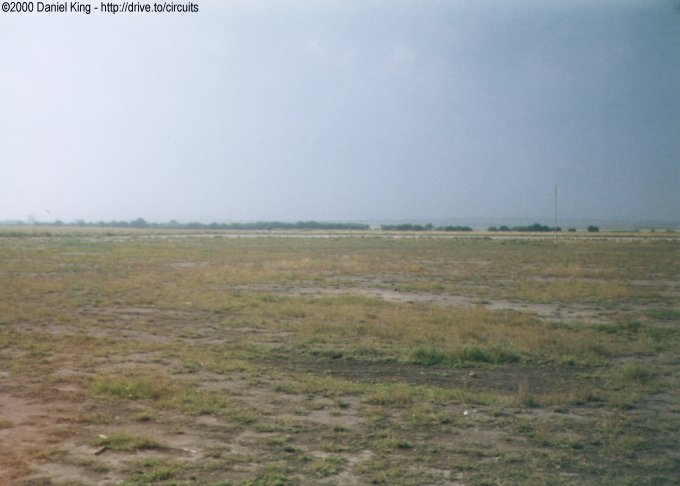

Numbers indicate where the pictures were taken. Click links above.
Runway
|| Contents | 1 | 2 | 3 | 4 | 5 | 6 | Home ||
Numbers indicate where the pictures were taken. Click links
above.
| Originally a second world war runway, the concrete surface is very bumpy. The surface still has white lines painted onto it which indictate the original course of the circuit through the artifical left-right chicane which formed the course layout. The course doubled back on itself at the end of the runway to return to the start/finish straight via a couple of 90° corners |



